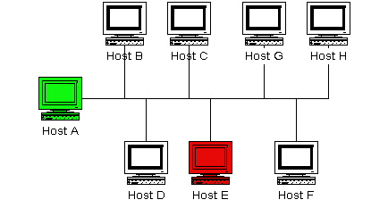

Introduction
This section describes a few scenarios for implementing redundant monitoring hosts an various types of network layouts. With redundant hosts, you can maintain the ability to monitor your network when the primary host that runs Nagios fails or when portions of your network become unreachable.
Note: If you are just learning how to use Nagios, I would suggest not trying to implement redudancy until you have becoming familiar with the prerequisites I've laid out. Redundancy is a relatively complicated issue to understand, and even more difficult to implement properly.
Index
Prerequisites
Sample scripts
Scenario 1 - Redundant monitoring
Scenario 2 - Failover monitoring
| Prerequisites |
Before you can even think about implementing redundancy with Nagios, you need to be familiar with the following...
| Sample Scripts |
All of the sample scripts that I use in this documentation can be found in the eventhandlers/ subdirectory of the Nagios distribution. You'll probably need to modify them to work on your system...
| Scenario 1 - Redundant Monitoring |
Introduction
This is an easy (and naive) method of implementing redundant monitoring hosts on your network and it will only protect against a limited number of failures. More complex setups are necessary in order to provide smarter redundancy, better redundancy across different network segments, etc.
Goals
The goal of this type of redundancy implementation is simple. Both the "master" and "slave" hosts monitor the same hosts and service on the network. Under normal circumstances only the "master" host will be sending out notifications to contacts about problems. We want the "slave" host running Nagios to take over the job of notifying contacts about problems if:
Network Layout Diagram
The diagram below shows a very simple network setup. For this scenario I will be assuming that hosts A and E are both running Nagios and are monitoring all the hosts shown. Host A will be considered the "master" host and host E will be considered the "slave" host.
|  |
Initial Program Settings
The slave host (host E) has its initial enable_notifications directive disabled, thereby preventing it from sending out any host or service notifications. You also want to make sure that the slave host has its check_external_commands directive enabled. That was easy enough...
Initial Configuration
Next we need to consider the differences between the object configuration file(s) on the master and slave hosts...
I will assume that you have the master host (host A) setup to monitor services on all hosts shown in the diagram above. The slave host (host E) should be setup to monitor the same services and hosts, with the following additions in the configuration file...
It is important to note that host A (the master host) has no knowledge of host E (the slave host). In this scenario it simply doesn't need to. Of course you may be monitoring services on host E from host A, but that has nothing to do with the implementation of redundancy...
Event Handler Command Definitions
We need to stop for a minute and describe what the command definitions for the event handlers on the slave host look like. Here is an example...
define command{
command_name handle-master-host-event
command_line /usr/local/nagios/libexec/eventhandlers/handle-master-host-event $HOSTSTATE$ $HOSTSTATETYPE$
}
define command{
command_name handle-master-proc-event
command_line /usr/local/nagios/libexec/eventhandlers/handle-master-proc-event $SERVICESTATE$ $SERVICESTATETYPE$
}
This assumes that you have placed the event handler scripts in the /usr/local/nagios/libexec/eventhandlers directory. You may place them anywhere you wish, but you'll need to modify the examples I've given here.
Event Handler Scripts
Okay, now lets take a look at what the event handler scripts look like...
Host Event Handler (handle-master-host-event):
#!/bin/sh # Only take action on hard host states... case "$2" in HARD) case "$1" in DOWN) # The master host has gone down! # We should now become the master host and take # over the responsibilities of monitoring the # network, so enable notifications... /usr/local/nagios/libexec/eventhandlers/enable_notifications ;; UP) # The master host has recovered! # We should go back to being the slave host and # let the master host do the monitoring, so # disable notifications... /usr/local/nagios/libexec/eventhandlers/disable_notifications ;; esac ;; esac exit 0
Service Event Handler (handle-master-proc-event):
#!/bin/sh # Only take action on hard service states... case "$2" in HARD) case "$1" in CRITICAL) # The master Nagios process is not running! # We should now become the master host and # take over the responsibility of monitoring # the network, so enable notifications... /usr/local/nagios/libexec/eventhandlers/enable_notifications ;; WARNING) UNKNOWN) # The master Nagios process may or may not # be running.. We won't do anything here, but # to be on the safe side you may decide you # want the slave host to become the master in # these situations... ;; OK) # The master Nagios process running again! # We should go back to being the slave host, # so disable notifications... /usr/local/nagios/libexec/eventhandlers/disable_notifications ;; esac ;; esac exit 0
What This Does For Us
The slave host (host E) initially has notifications disabled, so it won't send out any host or service notifications while the Nagios process on the master host (host A) is still running.
The Nagios process on the slave host (host E) becomes the master host when...
When the Nagios process on the slave host (host E) has notifications enabled, it will be able to send out notifications about any service or host problems or recoveries. At this point host E has effectively taken over the responsibility of notifying contacts of host and service problems!
The Nagios process on host E returns to being the slave host when...
When the Nagios process on host E has notifications disabled, it will not send out notifications about any service or host problems or recoveries. At this point host E has handed over the responsibilities of notifying contacts of problems to the Nagios process on host A. Everything is now as it was when we first started!
Time Lags
Redundancy in Nagios is by no means perfect. One of the more obvious problems is the lag time between the master host failing and the slave host taking over. This is affected by the following...
You can minimize this lag by...
When Nagios recovers on the host A, there is also some lag time before host E returns to being a slave host. This is affected by the following...
The exact lag times between the transfer of monitoring responsibilities will vary depending on how many services you have defined, the interval at which services are checked, and a lot of pure chance. At any rate, its definitely better than nothing.
Special Cases
Here is one thing you should be aware of... If host A goes down, host E will have notifications enabled and take over the responsibilities of notifying contacts of problems. When host A recovers, host E will have notifications disabled. If - when host A recovers - the Nagios process on host A does not start up properly, there will be a period of time when neither host is notifying contacts of problems! Fortunately, the service check logic in Nagios accounts for this. The next time the Nagios process on host E checks the status of the Nagios process on host A, it will find that it is not running. Host E will then have notifications enabled again and take over all responsibilities of notifying contacts of problems.
The exact amount of time that neither host is monitoring the network is hard to determine. Obviously, this period can be minimized by increasing the frequency of service checks (on host E) of the Nagios process on host A. The rest is up to pure chance, but the total "blackout" time shouldn't be too bad.
| Scenario 2 - Failover Monitoring |
Introduction
Failover monitoring is similiar to, but slightly different than redundant monitoring (as discussed above in scenario 1).
Goals
The basic goal of failover monitoring is to have the Nagios process on the slave host sit idle while the Nagios process on the master host is running. If the process on the master host stops running (or if the host goes down), the Nagios process on the slave host starts monitoring everything.
While the method described in scenario 1 will allow you to continue receive notifications if the master monitoring hosts goes down, it does have some pitfalls. The biggest problem is that the slave host is monitoring the same hosts and servers as the master at the same time as the master! This can cause problems with excessive traffic and load on the machines being monitored if you have a lot of services defined. Here's how you can get around that problem...
Initial Program Settings
Disable active service checks and notifications on the slave host using the execute_service_checks and enable_notifications directives. This will prevent the slave host from monitoring hosts and services and sending out notifications while the Nagios process on the master host is still up and running. Make sure you also have the check_external_commands directive enabled on the slave host.
Master Process Check
Set up a cron job on the slave host that periodically (say every minute) runs a script that checks the staus of the Nagios process on the master host (using the check_nrpe plugin on the slave host and the nrpe daemon and check_nagios plugin on the master host). The script should check the return code of the check_nrpe plugin . If it returns a non-OK state, the script should send the appropriate commands to the external command file to enable both notifications and active service checks. If the plugin returns an OK state, the script should send commands to the external command file to disable both notifications and active checks.
By doing this you end up with only one process monitoring hosts and services at a time, which is much more efficient that monitoring everything twice.
Also of note, you don't need to define host and service handlers as mentioned in scenario 1 because things are handled differently.
Additional Issues
At this point, you have implemented a very basic failover monitoring setup. However, there is one more thing you should consider doing to make things work smoother.
The big problem with the way things have been setup thus far is the fact that the slave host doesn't have the current status of any services or hosts at the time it takes over the job of monitoring. One way to solve this problem is to enable the ocsp command on the master host and have it send all service check results to the slave host using the nsca addon. The slave host will then have up-to-date status information for all services at the time it takes over the job of monitoring things. Since active service checks are not enabled on the slave host, it will not actively run any service checks. However, it will execute host checks if necessary. This means that both the master and slave hosts will be executing host checks as needed, which is not really a big deal since the majority of monitoring deals with service checks.
That's pretty much it as far as setup goes.